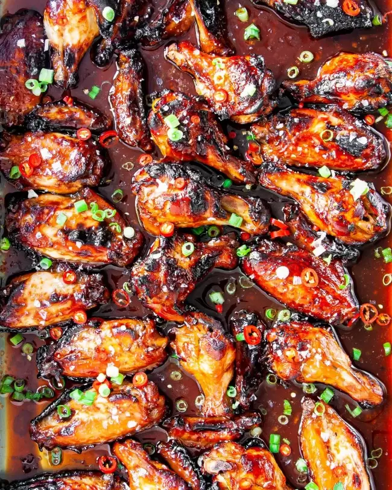

Sweet & Savory Grilled Chicken Marinade

The marinade combines the salty depth of soy sauce with the sweetness of honey, creating a perfect balance of savory and sweet. Minced garlic adds a pungent kick, while salt and pepper enhance the overall flavor profile.
Ingredients:
- 1lb of Chicken Breast
- 3 tbsp of Soy Sauce
- 3 tbsp of Raw Honey
- 1 tsp of Minced Garlic
- 1/2 tbsp of Salt
- 1/2 tbs of Pepper
Instructions:
- Make the marinade:In a bowl, whisk together the soy sauce, honey, garlic, salt, and pepper
- Marinate the chicken:Place the chicken in a large zip-lock bag or shallow dish. Pour the marinade over the chicken, ensuring all pieces are coated. Seal the bag or cover the dish and refrigerate for at least 30 minutes, or up to 4 hours for deeper flavor.
- Preheat the grill:Preheat your grill to medium-high heat (around 400°F). If using a gas grill, preheat for 10 minutes with the lid closed. Lightly oil the grill grates to prevent sticking.
- Grill the chicken:Remove the chicken from the marinade, discarding any remaining marinade. Pat the chicken dry with paper towels. Place the chicken on the preheated grill.
- Cook the chicken:Grill the chicken for 5-7 minutes per side, or until cooked through. The internal temperature of the thickest part of the chicken should reach 165°F (74°C) as measured with a meat thermometer.
- Rest and serve:Once cooked through, transfer the chicken to a plate and tent with foil. Let it rest for 5-10 minutes before slicing and serving.